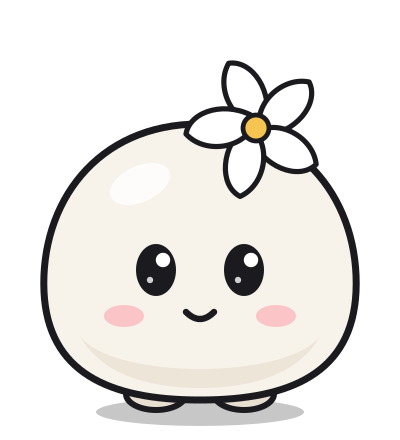
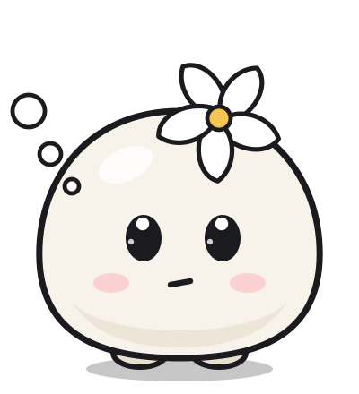
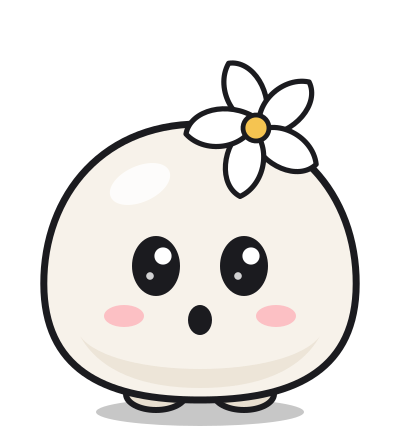
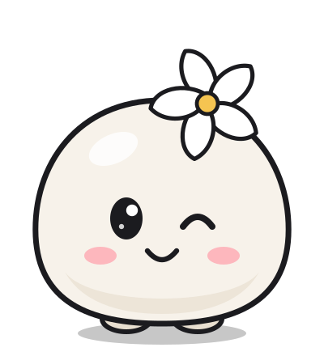
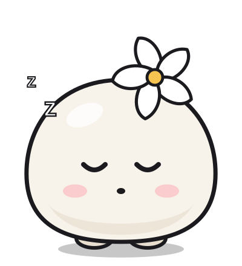

<!doctype html><meta charset="utf-8"><title>Chumoku mascot</title>
<style>body{margin:0;background:#0A0A0B;color:#9D9D9E;font:14px -apple-system,system-ui}
main{display:grid;grid-template-columns:repeat(3,1fr);gap:28px;padding:40px}
figure{margin:0;text-align:center}img{width:100%;max-width:240px}</style>
<main><figure><figcaption>happy</figcaption></figure><figure><figcaption>excited</figcaption></figure><figure><figcaption>thinking</figcaption></figure><figure><figcaption>wow</figcaption></figure><figure><figcaption>wink</figcaption></figure><figure><figcaption>sleepy</figcaption></figure></main>